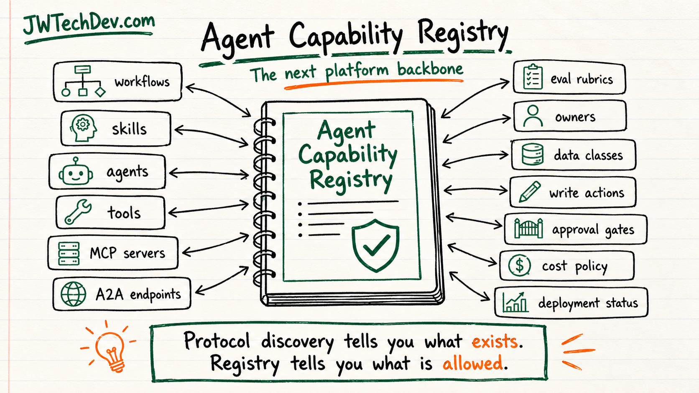

The agent capability registry should be the next platform backbone
Agent platforms need a source of truth for what agents can do, who owns them, and what they are allowed to touch.

Quick answer
The agent capability registry should become the backbone of serious agent platforms. It is the source of truth for workflows, skills, agents, tools, MCP servers, A2A endpoints, eval rubrics, owners, approved data classes, allowed write actions, approval gates, cost policy, and deployment status.
Why this needs to exist now
The agent stack is getting more capable and more distributed. MCP gives agents a standard way to reach tools and data. A2A gives agents a standard way to discover and collaborate with other agents. That is useful, but it also creates a basic operating question: where does the platform remember what is approved?
Without a registry, every agent workflow becomes tribal knowledge. One team knows which tool is safe. Another knows which data class is allowed. Someone else knows who owns the eval. Nobody has the complete picture until something breaks.
What the registry is
A capability registry is not just a list of agents. It is a governed catalog of what work the platform can perform and under what conditions.
At minimum, it should track the workflow name, business purpose, owning team, agent identity, skills, tools, MCP servers, A2A endpoints, approved data classes, allowed write actions, approval gates, eval rubric, cost policy, deployment environment, status, and last review date.
That turns agent capability into something observable and reviewable instead of something hidden inside prompts, code comments, or a single developer's laptop.
Where MCP and A2A fit
MCP and A2A make the registry more important, not less.
MCP tool catalogs help agents discover tools and capabilities. A2A agent cards help agents describe themselves and collaborate across boundaries. A platform registry should sit above those pieces and answer governance questions: who approved this capability, what data can it touch, what writes are allowed, what eval proves it works, what cost limit applies, and whether it is production-ready.
In plain language: protocol discovery tells you what exists. The registry tells you what is allowed.
The fields that matter
A useful registry should include: workflows, skills, agents, tools, MCP servers, A2A endpoints, eval rubrics, owners, approved data classes, allowed write actions, approval gates, cost policy, deployment status, last review date, incident notes, and rollback path.
Those fields are not bureaucracy for its own sake. They map directly to risk. Excessive agency usually comes from too much functionality, too many permissions, or too much autonomy. A registry gives the platform a place to see and reduce that risk.
Make it part of the lifecycle
The registry should not be a static spreadsheet that dies after the kickoff meeting. It should be part of the agent lifecycle.
Before build, the registry defines intended capability and data boundaries. During build, it links tools, owners, and evals. Before deployment, it records approval gates and cost policy. After deployment, it tracks status, usage, incidents, drift, and review dates.
The control-plane pattern
The registry becomes more powerful when other systems read from it. A gateway can use it to decide which tool endpoints are available. An approval system can use it to route human review. An eval runner can use it to decide which rubric applies. A cost monitor can use it to enforce budgets. A dashboard can use it to show deployment readiness.
That is the difference between a wiki page and a platform backbone. The registry should not only describe the system. It should help operate the system.
A starter model
Start small. Create one registry entry per production-facing workflow, not one entry per experiment.
For each workflow, record the user goal, agent owner, tools, data classes, allowed reads, allowed writes, approval gates, eval rubric, cost ceiling, deployment status, and rollback owner.
Then add automation only where the registry proves valuable: stale-owner alerts, missing-eval checks, unapproved-tool checks, cost-policy checks, and deployment-readiness views.
Bottom line
The next serious agent platform feature is not another prompt template. It is the capability registry.
If agents are going to call tools, collaborate through A2A, reach MCP servers, write data, spend money, and trigger workflows, teams need a durable source of truth for what those agents are allowed to do. That registry becomes the backbone.
Sources checked
Want the starter kit?
Grab the free JWTechDev.com starter kit if you want a practical way to connect cloud basics, AI workflows, and approval gates.
Get resources